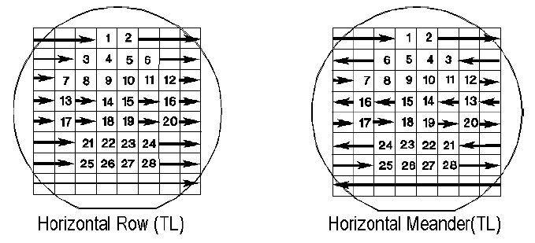

Sorting Patterns Provided
Four different types of sorting pattern are provided, namely,
- Horizontal Row
- Vertical Column
- Horizontal Meander
- Vertical Meander
For each of these patterns you can choose where you want the sorting to begin, that is, the top left or right, or bottom left or right corner of the grid.
The figure below shows two of these patterns.
